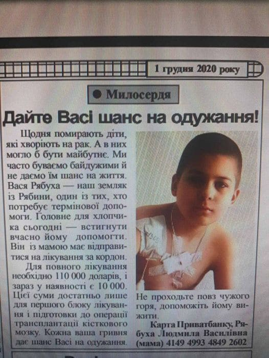
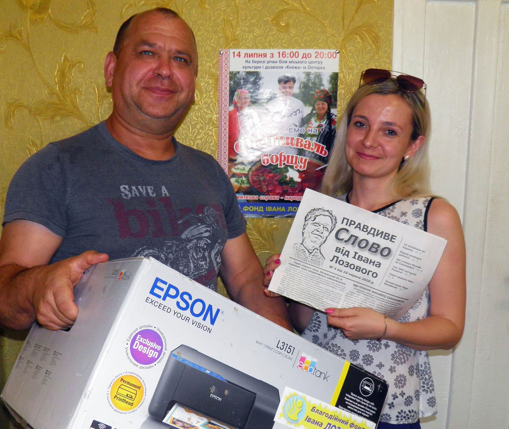
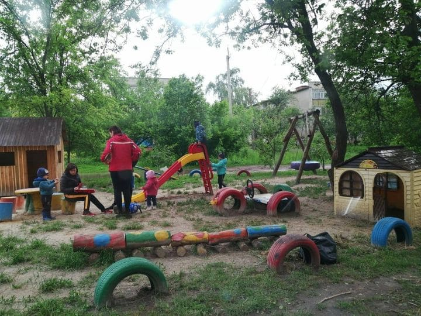
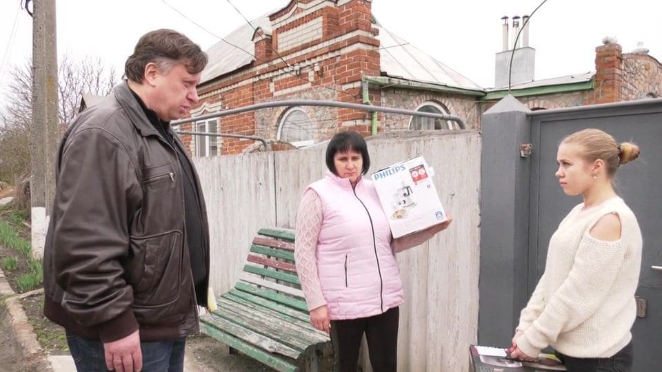
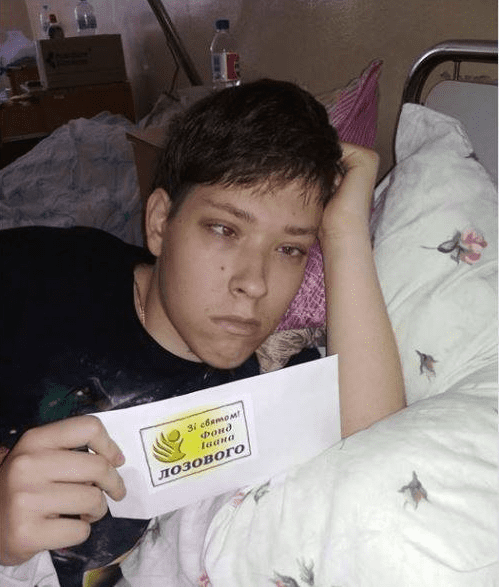
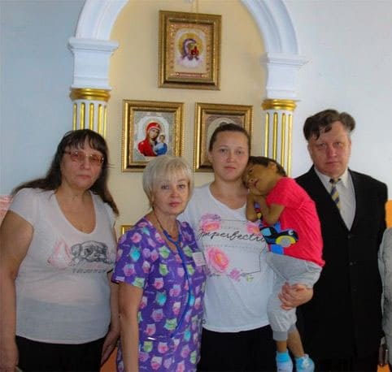

Адресна допомога:

10 грудня 2020р. - 9-річний хлопчик Василь
Рябуха з смт. Кириківка. Подарунок від фонду: 10
000 грн на лікування.

16 червня 2020р. - Анна Дрига с. Яблучне.
Подарунок від фонду: Принтер.

1 червня 2020р. - Дитячий майданчик на
мікрорайоні м. Лебедин. Подарунок від фонду:
Іграшковий будинок, гірка, коник-гойдалка.

2 травня 2019р. - Зустріч із вдовою Воїна АТО -
Давидовою Світланою Олександрівною у м.
Тростянець Подарунок. від фонду: Кухонний
комбайн.

20 грудня 2018р. - Максим Капран, талановитий
підліток-інвалід м. Лебедин. Подарунок від
фонду: Грошова допомога.

1 листопада 2018р. - Охтирська лікарня.
Подарунок від фонду: Вручення благодійної
допомоги дитині інваліду.